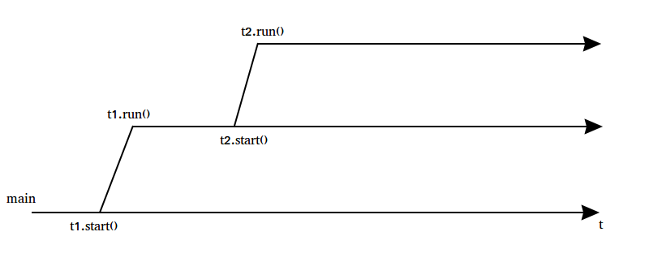
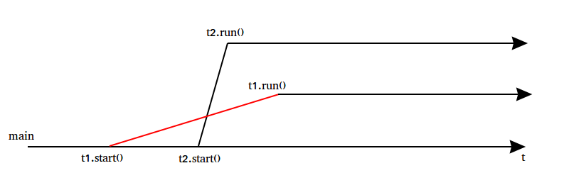

Многопоточность
и
JAVA
Что такое процесс?
Процесс — экземпляр программы во время выполнения, независимый объект, которому выделены системные ресурсы (например, процессорное время и память). Каждый процесс выполняется в отдельном адресном пространстве: один процесс не может получить доступ к переменным и структурам данных другого. Если процесс хочет получить доступ к чужим ресурсам, необходимо использовать межпроцессное взаимодействие.
Что такое поток?
Поток использует то же самое пространства стека, что и процесс, а множество потоков совместно используют данные своих состояний. Каждый поток может работать (читать и писать) с одной и той же областью памяти, в отличие от процессов, которые не могут просто так получить доступ к памяти другого процесса. У каждого потока есть собственные регистры и собственный стек, но другие потоки могут их использовать.
Процессы и потоки
Как представлен поток в JAVA?
- Поток — объект у класса которого есть методы run() и start()
- После вызова метода start(), через какое-то время будет вызван run()
- Метод run() будет выполнен в своем стеке.
Роль операционной системы
Роль операционной системы
- Создает потоки
- Переключает потоки
- API для уведомления потока
Запуск потоков
Порядок не определен!
Java Concurrency
В Java есть два пути разрабоки многопоточных приложений:
- Сделать всё руками: Thread, Runable, wait/notify, synchronized
- Использовать высокоуровневое API: java.utils.concurrent
Как создать поток?
Реализовать интерфейс Runnable
// Создание потока
Thread t = new Thread(new Runnable() {
public void run() {
System.out.println("Hello world!");
}
});
// Запуск потока
t.start();
Как создать поток?
Наследовать класс Thread
// Создание потока
Thread t = new Thread() {
public void run() {
System.out.println("Hello world!");
}
};
// Запуск потока
t.start();
Thread vs Runnable
- Можно наследовать класс отличный от Thread
- Нужно передавать в конструктор Thread
- Содержит методы упраления потоком
- Объект текущего потока можно получить из любого места кода
Runnable
Thread
Thread thread = Thread.currentThread()
Класс Thread
Некоторые методы:
long getId()
String getName()
void setName(String name)
int getPriority()
void setPriority(int priority)
static void yield()
static void sleep(long ms)
void interrupt()
static boolean interrupted()
void join()
Прерывания
thread.interrupt(); //прервать поток thread
Прерывания
try{
Thread.sleep(5000);
}
catch(InterruptedException e){ //нас прервали
return;
}
Прерывания
for(int i = 0; i< inputs[i];i++){
heavyTask(inputs[i]);
if(Thread.interrupted()){ //нас прервали
return;
}
}
Состояния потоков
Классические задачи многопоточного программирования
Задача доступа к общему ресурсу
- Несколько потоков обращаются к общему ресурсу
Счетчик
public class UnsafeCounter implements Counter{
private int counter = 0;
@Override
public int get(){
return counter;
}
@Override
public void increment(){
counter++;
}
@Override
public void reset(){
counter = 0;
}
}
public class ExperimentRunner{
private int threadsNumber;
private int experimentsNumber;
private int repeatsNumber;
public ExperimentRunner(int threadsNumber, int experimentsNumber, int repeatsNumber){
this.threadsNumber = threadsNumber;
this.experimentsNumber = experimentsNumber;
this.repeatsNumber = repeatsNumber;
}
public void runExperiments(Counter counter){
long totalTime = 0;
System.out.format("Counter '%s':\n", counter.getClass().getName());
for (int i = 0; i < experimentsNumber; i++){
long startTime = System.currentTimeMillis();
runExperiment(counter);
long elapsed = (System.currentTimeMillis() - startTime);
totalTime += elapsed;
System.out.format(" Experiment [%d/%d]:\tvalue = %d time = %d ms\n", i + 1, experimentsNumber,
counter.get(), elapsed);
counter.reset();
}
System.out.format(" Average time:\t%d ms\n", totalTime / experimentsNumber);
}
private void runExperiment(Counter counter){
Runnable experiment = () -> {
for (int i = 0; i < (repeatsNumber / threadsNumber); i++){
counter.increment();
}
};
List<Thread> threads = Stream.generate(() -> new Thread(experiment)).limit(threadsNumber)
.collect(Collectors.toList());
threads.forEach(t -> t.start());
threads.forEach(t -> {
try{
t.join();
}
catch (InterruptedException e){
e.printStackTrace();
}
});
}
}
Запуск эксперимента
private void runExperiment(Counter counter){
Runnable experiment = () -> {
for (int i = 0; i < (repeatsNumber / threadsNumber); i++){
counter.increment();
}
};
List<Thread> threads = Stream.generate(() -> new Thread(experiment))
.limit(threadsNumber).collect(Collectors.toList());
threads.forEach(t -> t.start());
threads.forEach(t -> {
try{
t.join();
}
catch (InterruptedException e){
e.printStackTrace();
}
});
}
Счетчик
public static void main(String[] args)
{
Counter counter = new UnsafeCounter();
ExperimentRunner runner = new ExperimentRunner(4, 5, 100_000_000);
runner.runExperiments(counter));
}
Счетчик
Counter 'ru.naumen.counter.impls.UnsafeCounter':
Experiment [1/5]: value = 74618414 time = 25 ms
Experiment [2/5]: value = 66158308 time = 3 ms
Experiment [3/5]: value = 54063137 time = 3 ms
Experiment [4/5]: value = 76346929 time = 4 ms
Experiment [5/5]: value = 44644001 time = 4 ms
Average time: 7 ms
Быстро, но неправильно.
Инкремент не атомарен
Базовые термины
- Critical Section
- Semaphore
- Mutex
- Monitor
- Lock
Critical Section
Участок исполняемого кода программы, в котором производится доступ к общему ресурсу (данным или устройству), который не должен быть одновременно использован более чем одним потоком исполнения
Semaphore
Объект, ограничивающий количество потоков, которые могут войти в заданный участок кода. (Э. Дейкстра)
Возможные операции над семафором:
init(n): //Инициализация семафора (задать начальное значение счётчика)
счётчик := n
enter()://Захват семафора (ждать пока счётчик станет больше 0, после этого уменьшить счётчик на единицу)
счётчик := счётчик - 1
leave()://Освобождение семафора (увеличить счётчик на единицу)
счётчик := счётчик + 1
Mutex
это простейшие двоичные семафоры, которые могут находиться в одном из двух состояний — отмеченном или неотмеченном.
Monitor
Высокоуровневая кострукция, которая состоит из mutex-а и массива ожидающих очереди потоков.
У монитора должен быть механизм остановки потока и сигнализации о доступности продолжения работы.
Lock
Это механизм синхронизации, позволяющий обеспечить исключительный доступ к разделяемому ресурсу между несколькими потоками
Мягкая блокировка — каждый поток пытается получить блокировку перед доступом к соответсвующему разделяемому ресурсу.
Обязательная блокировка — попытка несанкционированного доступа к заблокированному ресурсу будет прервана, через создание исключения.
Ключевое слово synchronized
Синхронизация методов на текущем объекте
public class SynchronizedCounter implements Counter{
private int counter = 0;
@Override
public synchronized int get(){
return counter;
}
@Override
public synchronized void increment(){
counter++;
}
@Override
public synchronized void reset(){
counter = 0;
}
}
Ключевое слово synchronized
Синхронизация блока на произвольном объекте
Object lock = new Object();
synchronized(lock){
//do something
}
Ключевое слово synchronized
Синхронизация статического метода
public class TestStaticSync{
public static synchronized void doSomething(){
//do something
}
}
Синхронизация происходит на объекте TestStaticSync.class
Singleton
- Потокобезопасный
- Все получат один и тот же синглетон
- Корректно проиницилизирован
- Ленивый
- Эффективный
Synchronized Accessor
public class Singleton{
private static Singleton instance;
public static synchronized Singleton getInstance(){
if (instance == null){
instance = new Singleton();
}
return instance;
}
}
Double Checked Locking
public class Singleton {
private static Singleton instance;
public static Singleton getInstance() {
Singleton localInstance = instance;
if (localInstance == null) {
synchronized (Singleton.class) {
localInstance = instance;
if (localInstance == null) {
instance = localInstance = new Singleton();
}
}
}
return localInstance;
}
}
volatile
- Потоки могут кешировать переменные
- Значения в кешах разных потоков могут не совпадать
volatile int i = 0; // означает, то что переменную i
//нужно всегда брать из общей памяти
Double Checked Locking & volatile
public class Singleton {
private static volatile Singleton instance;
public static Singleton getInstance() {
Singleton localInstance = instance;
if (localInstance == null) {
synchronized (Singleton.class) {
localInstance = instance;
if (localInstance == null) {
instance = localInstance = new Singleton();
}
}
}
return localInstance;
}
}

Очередь заданий
wait()/notify()/notifyAll()
public class JobQueue{
List<Runnable> jobs = new ArrayList<>();
public synchronized void put(Runnable job){
jobs.add(job);
this.notifyAll();
}
public synchronized Runnable getJob(){
while (jobs.size()==0){
this.wait();
}
return jobs.remove(0);
}
}
interface Lock
Lock l = ...;
l.lock();
try
{
//действия над ресурсом, защищенным данной блокировкой
}
finally
{
l.unlock() //гарантия того, что блокировка будет отпущена
}
interface Lock
- ReentrantLock
- ReadWriteLock - имеет разные механизмы блокировки на чтение и запись, позволяя уменьшить накладные расходы
Широко используются две основные реализации Lock:
ReentrantLock
public class ReentrantLockCounter implements Counter{
ReentrantLock lock;
private int counter = 0;
public ReentrantLockCounter(boolean fair){
lock = new ReentrantLock(fair);
}
...
@Override
public void increment(){
lock.lock();
try{
counter++;
}
finally{
lock.unlock();
}
}
...
}
interface Condition
- Методы:
void await() throws InterruptedException;
void signal();
void signalAll();
interface Condition
- Создание:
Lock lock = new ReentrantLock();
Condition blockingPoolA = lock.newCondition();
Condition blockingPoolB = lock.newCondition();
Condition blockingPoolC = lock.newCondition();
Condition: применение
public class JobQueueWithLock{
List<Runnable> jobs = new ArrayList<>();
Lock lock = new ReentrantLock();
Condition cond = lock.newCondition();
public void put(Runnable job){
lock.lock();
try {
jobs.add(job);
cond.signalAll();
}
finally {lock.unlock();}
}
public Runnable getJob(){
lock.lock();
try{
while (jobs.size() == 0)
cond.await();
return jobs.remove(0);
}
finally{
lock.unlock();
}
}
}
Задача о читателях и писателях
- Читать могут много потоков одновременно
- Писать может только один поток
- Читать во время записи нельзя
ReentrantReadWriteLock
public class RWLockCounter implements Counter{
ReentrantReadWriteLock lock = new ReentrantReadWriteLock();
private int counter = 0;
public RWLockCounter(boolean fair){
lock = new ReentrantReadWriteLock(fair);
}
...
@Override
public void increment(){
lock.writeLock().lock();
counter++;
lock.writeLock().unlock();
}
...
}
StampedLock
public class StampedLockCounter implements Counter
{
StampedLock lock;
private int counter = 0;
public StampedLockCounter()
{
lock = new StampedLock();
}
...
@Override
public void increment()
{
long stamp = lock.writeLock();
counter++;
lock.unlockWrite(stamp);
}
...
}
Атомарные операции
Атомарные операции выполняются целиком, их выполнение не может быть прервано планировщиком потоков.
Аппаратная поддержка — compare-and-swap
Атомарные операции
Классы для выполнения атомарных операций находятся в java.util.concurrent.atomic:
- AtomicInteger
- AtomicLong
- AtomicDouble
- AtomicReference
CAS
public class SimulatedCAS
{
private int value;
public synchronized int getValue() { return value; }
public synchronized int compareAndSwap(int expectedValue, int newValue)
{
int oldValue = value;
if (value == expectedValue)
{
value = newValue;
}
return oldValue;
}
}
AtomicInteger
public class AtomicCounter implements Counter
{
private AtomicInteger counter = new AtomicInteger(0);
@Override
public int get()
{
return counter.intValue();
}
@Override
public void increment()
{
counter.incrementAndGet();
}
@Override
public void reset()
{
counter.set(0);
}
}
Производительность
| Метод синхронизации | Среднее время выполнения (мс) |
| AtomicInteger | 1701 |
| StampedLock | 3164 |
| ReentrantReadWriteLock | 3544 |
| ReentrantLock | 3654 |
| synchronized | 6076 |
ThreadLocal
- Позволяет хранить данные изолированно от других потоков
public class ShoppingCard{
ThreadLocal<ArrayList<Item>> myThreadLocal = ThreadLocal.withInitial(ArrayList::new);
public void add(Item item){
myThreadLocal.get().add(item);
}
public String getReceipt(){
StringBuilder sb = new StringBuilder();
myThreadLocal.get().forEach(item -> sb.append(String.format("%s - %d$\n", item.getName(), item.getPrice())));
return sb.toString();
}
public void remove(Item item){
myThreadLocal.get().remove(item);
}
}
ThreadLocal
ShoppingCard shoppingCard = new ShoppingCard();
Thread customer1 = new Thread(() -> {
shoppingCard.add(new Item("Banana", 1));
shoppingCard.add(new Item("Beer", 5));
System.out.format("Receipt for customer1 :\n%s\n", shoppingCard.getReceipt());
});
Thread customer2 = new Thread(() -> {
shoppingCard.add(new Item("Cola", 2));
shoppingCard.add(new Item("Bread", 1));
System.out.format("Receipt for customer2 :\n%s\n", shoppingCard.getReceipt());
});
customer1.start();
customer2.start();
customer1.join();
customer2.join();
Потокобезопасные структуры данных
- CopyOnWriteArrayList
- CopyOnWriteArraySet
- ConcurrentHashMap
- ConcurrentLinkedDeque
- ConcurrentLinkedQueue
- ConcurrentSkipListMap
- ConcurrentSkipListSet
Copy-on-write
- CopyOnWriteArrayList и CopyOnWriteArraySet основаны на массиве, копируемом при операции записи
- Хороши когда 90% чтения
- При частой записи большая коллекция может убить производительность
- Сортировки нет
- Итераторы не поддерживают операций модификации
Производитель-потребитель
- Один поток производит данные, второй их потребляет
- Несколько потоков производят данные и несколько их потребляют
- Данные могут храниться в очереди (не)ограниченного объема

Задания-работники
- Поток-клиент ждет выполнения задания потоком-сервером
Блокирующие очереди
- ArrayBlockingQueue
- LinkedBlockingDeque
- LinkedBlockingQueue
- PriorityBlockingQueue
- DelayQueue элементы с задержкой
- LinkedTransferQueue универсальная очередь
- SynchronousQueue ёмкость 0
Пул потоков
- Переиспользование потоков
- Ограниченное число потоков
- Очередь заданий
ExecutorService Framework
Цель применения: отделить работу, выполняемую внутри потока, от логики создания потоков.
Создание:
Executors.newCachedThreadPool(); //Создаёт новые потоки при необходимости,
//повторно использует освободившиеся потоки
Executors.newFixedThreadPool(12); //С ограничением количества потоков
Executors.newSingleThreadExecutor(); //Ровно один поток
Executors.newScheduledThreadPool(); //Можно настроить задержку запуска / повторный запуск
Clients & Workers
ExecutorService workers = Executors.newFixedThreadPool(5);
ExecutorService clients = Executors.newFixedThreadPool(10);
for (int i = 3; i < 20; i++){
final int idx = i;
Callable<Long> task = (i % 2 == 0)? (()->calculateFibonacci(idx)):
(()->calculateFactorial(idx));
Future<Long> future = workers.submit(task);
clients.execute(() -> {
try{
Long result = future.get();
System.out.format("%s for %d = %d\n",
idx % 2 == 0 ? "Fibonacci" : "Factorial",
idx, result);
}
catch (InterruptedException | ExecutionException e){
e.printStackTrace();
}
});
}
workers.shutdown();
clients.shutdown();
Fork/Join API
- ForkJoinPool
- … implements ExecutorService
- т.е. туда можно засылать и обычные Runnable, Callable
- ForkJoinTask<V>
- RecursiveAction
- RecursiveTask<V>
Fork/Join API
- Подход FJP - Work stealing
- У каждого потока своя очередь
- С головой очереди может работать только владелец
- Свободные потоки крадут задачи у перегруженных(из хвоста)
Fork/Join API
Пример RecursiveTask
private static class StandardTask extends RecursiveTask<Long>{
private final Problem problem;
private final int l;
private final int r;
public StandardTask(Problem p, int l, int r) {
this.problem = p;
this.l = l;
this.r = r;
}
@Override
protected Long compute() {
if (r - l <= THRESHOLD){
return problem.solve(l, r);
}
int mid = (l + r) >>> 1;
ForkJoinTask<Long> t1 = new StandardTask(problem, l, mid);
ForkJoinTask<Long> t2 = new StandardTask(problem, mid, r);
t1.fork();
t2.fork();
long res = 0;
res += t2.join();
res += t1.join();
return res;
}
}
Fork/Join API
Пример RecursiveTask
ForkJoinTask<Long> t1 = new StandardTask(problem, l, mid);
ForkJoinTask<Long> t2 = new StandardTask(problem, mid, r);
t1.fork();
t2.fork();
long res = 0;
res += t2.join();
res += t1.join();
return res;
Fork/Join API
- fork():
- Кладёт задачу в очередь, и возвращается
- Кто-нибудь другой может эту задачу подхватить
- join():
- Блокируется, пока задача не закончится
- Но поток терять на этом нельзя!
- FJP может дать ему что-нибудь повыполнять
Fork/Join API
>Parallel Stream
- Использует FJP
- BaseStream.parallel
- Collection.parallelStream
double average = persons
.parallelStream()
.filter(p -> p.getGender() == Person.Sex.MALE)
.mapToInt(Person::getAge)
.average()
.getAsDouble();
CompletableFuture
- Удобный способ написания асинхронного кода
- Создание:
CompletableFuture<Integer> answer = CompletableFuture.completedFuture(42);
CompletableFuture<Integer> answer = CompletableFuture.supplyAsync(() -> someOperation());
CompletableFuture<Integer> answer = CompletableFuture.supplyAsync(() -> someOperation(),
executorService);
Integer result = answer.get(); //блокирует
CompletableFuture
- Обработка результатов
CompletableFuture<Integer> answer = CompletableFuture.supplyAsync(() -> someOperation());
answer.thenAccept(a -> System.out.format("Answer: %d", a));
CompletableFuture
- Цепочка обработки
CompletableFuture<Integer> wordsCount = CompletableFuture.supplyAsync(() -> getText())
.thenApply(text -> text.split(" "))
.thenApply(words -> words.length);
System.out.format("Words count: %d", wordsCount.get());
CompletableFuture
- Обработка результатов нескольких CompletableFuture
CompletableFuture<String> text1 = CompletableFuture.supplyAsync(() -> getText(1));
CompletableFuture<String> text2 = CompletableFuture.supplyAsync(() -> getText(1));
CompletableFuture<Integer> both = text1.
thenCombine(text2, (String textOne, String textTwo) ->
textOne.length() + textTwo.length()
);
both.thenAccept(length -> System.out.format("Total length: %d", length));
CompletableFuture
- Ожидание результатов нескольких CompletableFuture
CompletableFuture<String> text1 = CompletableFuture.supplyAsync(() -> getText(1));
CompletableFuture<String> text2 = CompletableFuture.supplyAsync(() -> getText(2));
CompletableFuture<String> text3 = CompletableFuture.supplyAsync(() -> getText(3));
CompletableFuture<String> text4 = CompletableFuture.supplyAsync(() -> getText(4));
CompletableFuture<Void> allCompleted = CompletableFuture.allOf(text1, text2, text3, text4);
allCompleted.thenRun(() -> {
try {
System.out.format("Loaded: %d", text1.get());
System.out.format("Loaded: %d", text2.get());
System.out.format("Loaded: %d", text3.get());
System.out.format("Loaded: %d", text4.get());
} catch (InterruptedException | ExecutionException e) {
e.printStackTrace();
}
});
);
CompletableFuture
- Обработка ошибок
CompletableFuture<String> text1 = CompletableFuture.supplyAsync(() -> getText(1));
CompletableFuture<String> recovered = text1.handle((result, throwable) -> {
if (throwable != null) {
return "Not text here! Exception: " + throwable;
} else {
return result.toUpperCase();
}
});
CompletableFuture<String> text2 = CompletableFuture.supplyAsync(() -> getText(2));
CompletableFuture<String> recovered = text1.exceptionally(throwable -> "Sorry, try again later");